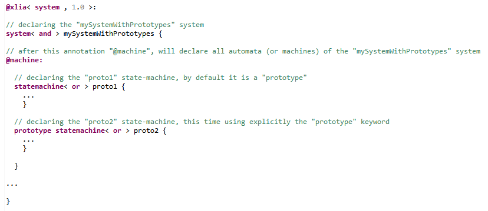
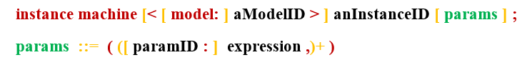
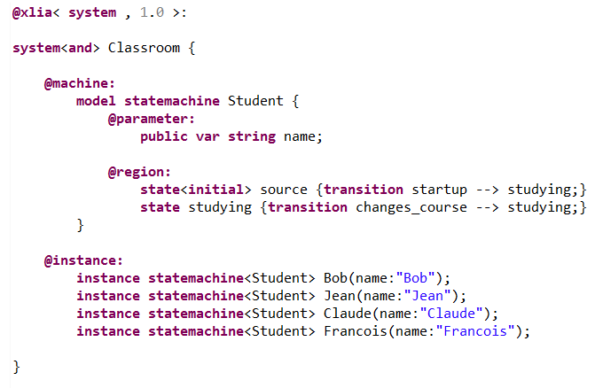
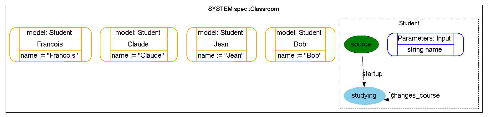

XLIA supports the "model-instance" paradigm. Thus, a machine can be defined to be a :
The default mode, in a syntactic economy perspective, is that each machine is a "prototype".
In the code below, we define two prototype statemachines : proto1 and proto2.
In the code below, we define two statemachine models : model1 and model2 and two statemachine instances : instanceofmodel1 and instanceofmodel2. Notice the use of the "@machine:" and "@instance:" sections :

On the condition that the code in the statemachines works the same, we the "mySystemWithPrototypes" and the "mySystemWithModelAndInstances" systems can be exactly equivalent.
So, if the two formalisms can lead to the same thing, what's the point in creating a model and an instance ?
In facts, one of the forces of the "model-instance paradigm" is that we can , from a single model, create different instance, and not just equivalent instances with different names.
Indeed, below is the general syntax (see BNF syntax) to create machine instances from machine models. The "params" field can be used to specify values for attributes (defined within the model) just for this instance.
This allows to give different parameters to different instances. We define parameters in the "@parameter:" section.
In this example, from a single 'Student' model, we define several pupils in a Classroom. Each pupil will be an instance of the model, with a unique and different name.
To implement this possibility, instead of using the classic "@property:" section, we use the "@parameter:" section when declaring the variable "name".
This will allow a specification of the value of "name" when declaring the instances of the 'Student' model.
You can see below the concrete syntax that is used :
The generated statemachine graph being the following :
